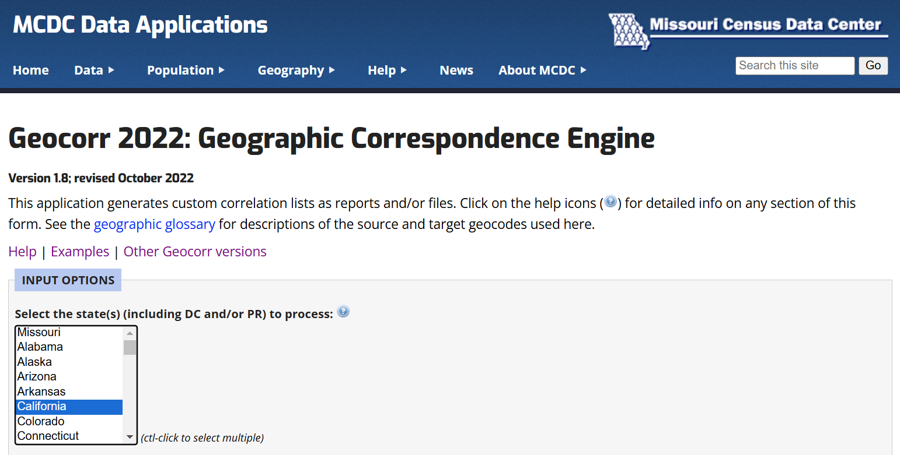
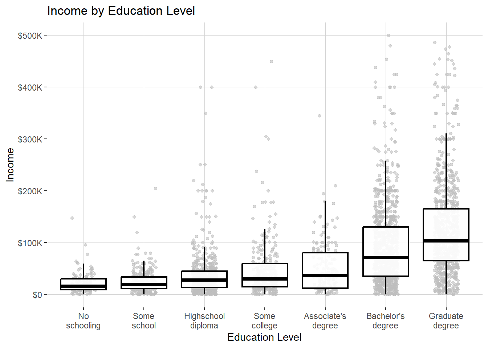

library(dplyr)
library(ggplot2)
# Statistics
library(modelsummary)
library(srvyr)
library(survey)
# Webscraping
library(httr)
library(rvest)
library(readr)
library(glue)Working with IPUMS microdata
R
Data Management
Amazing support from Bert Wilden
What is the median household income in Oakland, California?
I don’t like the IPUMS option for getting single year data points, for that I like tidycensus
library(tidycensus)
census_api_key(Sys.getenv("census_api_key"))I can use tidycensus to easily access aggregate measures from the census.
oakland_stats <- get_acs(
geography = "place",
variables = c(
# Median household income
median_hh_income = "B19013_001",
# Total population for poverty status determination
total_pop = "B17001_001"
),
state = "CA",
year = 2022,
survey = "acs1"
)
oakland_stats <- oakland_stats %>% filter(GEOID == '0653000')
oakland_stats %>% select(c(variable, estimate))| variable | estimate |
|---|---|
| total_pop | 426323 |
| median_hh_income | 93146 |
Microdata via IPUMS
One of the most popular sources for downloading census microdata is the University of Minesota’s Integrated Public Use Microdata Series (IPUMS). The IPUMS team provides the following products, all for free! - A centralized API for downloading census microdata - Comprehensive documentation for working with census microdata - Harmonized variables across time.
Here I’ll load the ipumsr library and set an API key for submitting requests.
library(ipumsr)
set_ipums_api_key(Sys.getenv("ipums_api_key"))The ipumsr website provides details on what degree of support the package has for various IPUMS products, though it’s also possible to check using the ipums_data_collections() function. I prefer the function so that I can see exactly what code I’ll need to plug into the API (see api_support).
ipums_data_collections() %>%
filter(api_support == TRUE) %>%
arrange(desc(collection_type))| collection_name | collection_type | code_for_api | api_support |
|---|---|---|---|
| IPUMS USA | microdata | usa | TRUE |
| IPUMS CPS | microdata | cps | TRUE |
| IPUMS International | microdata | ipumsi | TRUE |
| IPUMS ATUS | microdata | atus | TRUE |
| IPUMS AHTUS | microdata | ahtus | TRUE |
| IPUMS MTUS | microdata | mtus | TRUE |
| IPUMS NHIS | microdata | nhis | TRUE |
| IPUMS MEPS | microdata | meps | TRUE |
| IPUMS NHGIS | aggregate data | nhgis | TRUE |
For any analysis of populations in the U.S., the IPUMS USA (annual surveys) and IPUMS CPS (monthly surveys) collections are of particular interest. I’ll look at IPUMS USA:
IPUMS USA collects, preserves and harmonizes U.S. census microdata and provides easy access to this data with enhanced documentation. Data includes decennial censuses from 1790 to 2010 and American Community Surveys (ACS) from 2000 to the present (Ruggles et al. 2024).
We can check out the newest products they have in the USA collection as follows:
get_sample_info(collection="usa") %>% arrange(desc(name)) %>% head(5)| name | description |
|---|---|
| us2022d | 2018-2022, PRCS 5-year |
| us2022c | 2018-2022, ACS 5-year |
| us2022b | 2022 PRCS |
| us2022a | 2022 ACS |
| us2021d | 2017-2021, PRCS 5-year |
An IPUMS USA example
What is the median household income in Oakland, California?
I’ll define a function, retrieve_ca_sample() that accomplishes that and only run the IPUMS request if I don’t already have the data locally.
retrieve_ca_sample <- function(sample){
extract <- define_extract_micro(
description = "CA Incomes by PUMA",
collection = "usa",
samples = c(sample),
variables = list(
"PUMA",
"AGE",
"SEX",
"EDUC",
"HHINCOME",
"INCTOT",
"REPWT",
"REPWTP",
var_spec("STATEFIP", case_selections = "06")
)
)
data_path <- extract %>%
submit_extract() %>%
wait_for_extract() %>%
download_extract(download_dir = here::here("data"),
overwrite = TRUE)
data <- read_ipums_micro(data_path)
return(data)
}Now I will run the retrieval conditionally, so that if I already have the file, I don’t re-download it
local_ipums_extracts <- list.files(
path = here::here('data'),
pattern = "\\.xml$",
full.names = TRUE)
if (length(local_ipums_extracts) > 0) {
existing_path <- local_ipums_extracts[1]
data <- read_ipums_micro(existing_path)
} else {
data <- retrieve_ca_sample("us2022a")
}Use of data from IPUMS USA is subject to conditions including that users should cite the data appropriately. Use command `ipums_conditions()` for more details.We will return to replicate weights later.
data_no_rep <- data %>%
select(-starts_with("REPWT"))
data_no_rep %>%
head()| YEAR | SAMPLE | SERIAL | CBSERIAL | HHWT | CLUSTER | STATEFIP | PUMA | STRATA | GQ | HHINCOME | PERNUM | PERWT | FAMUNIT | RELATE | RELATED | SEX | AGE | EDUC | EDUCD | INCTOT |
|---|---|---|---|---|---|---|---|---|---|---|---|---|---|---|---|---|---|---|---|---|
| 2022 | 202201 | 74692 | 2.02201e+12 | 14 | 2.022001e+12 | 6 | 6509 | 650906 | 4 | 9999999 | 1 | 14 | 1 | 12 | 1270 | 2 | 56 | 6 | 64 | 14500 |
| 2022 | 202201 | 74693 | 2.02201e+12 | 27 | 2.022001e+12 | 6 | 6501 | 650106 | 3 | 9999999 | 1 | 27 | 1 | 13 | 1301 | 1 | 52 | 0 | 2 | 0 |
| 2022 | 202201 | 74694 | 2.02201e+12 | 70 | 2.022001e+12 | 6 | 8101 | 810106 | 3 | 9999999 | 1 | 70 | 1 | 13 | 1301 | 1 | 61 | 7 | 71 | 80 |
| 2022 | 202201 | 74695 | 2.02201e+12 | 22 | 2.022001e+12 | 6 | 8303 | 830306 | 4 | 9999999 | 1 | 22 | 1 | 12 | 1270 | 2 | 26 | 7 | 71 | 9000 |
| 2022 | 202201 | 74696 | 2.02201e+12 | 8 | 2.022001e+12 | 6 | 6712 | 671206 | 3 | 9999999 | 1 | 8 | 1 | 13 | 1301 | 2 | 38 | 6 | 63 | 48000 |
| 2022 | 202201 | 74697 | 2.02201e+12 | 49 | 2.022001e+12 | 6 | 7301 | 730106 | 4 | 9999999 | 1 | 49 | 1 | 12 | 1270 | 1 | 23 | 6 | 63 | 24000 |
Geographies in ACS microdata
The smallest geographic area explicitly identified in the microdata is public use microdata area (PUMA), a geographic area defined based on population. Each PUMA includes about 100,000 residents. IPUMS geographers are sometimes able to infer other small geographic areas, such as city, metro area, and county, from PUMA, depending on how the boundaries of PUMAs and these other geographic areas correspond. As a result, some cities, metro areas, and counties are not able to be identified in the microdata. https://forum.ipums.org/t/how-can-i-pull-data-at-the-zip-code-or-city-level/5650/2
What are PUMAS?
GEOCORR

The Geocorr (geographic correspondence engine) application generates files and/or reports — called correlation lists — showing relationships between two or more geographic coverages in the United States.
For example, suppose you have county-level data for California and would like to convert that data to the ZIP code level. Geocorr can show how each county relates to the ZIP code(s) that intersect it. It can tell you, for each of those ZIP/county intersections, what the size of that intersection is and what portion of the ZIP’s total population is in that intersection. https://mcdc.missouri.edu/applications/docs/geocorr2022-help.html
PUMAs are typically completely inside of counties, but they sometimes cross them. GEO Corr allows you to “crosswalk.” If a puma crosses a county line, geocorr gives you a crosswalk with every Puma-county combo that exists. There’s an allocation factor for each Puma that shows how much it should allocated, e.g. .3, .7. You can weight it by household. You can also cross walk to places, metro areas. Puma->Place.
Here I’ll define a function, geocorr_2022() that queries GEOCORR 2022 and retrieves a .csv file establishing the relationships between geographies in California.
Code
geocorr_2022 <- function(state, geo_1, geo_2, weight_var) {
base_url <- "https://mcdc.missouri.edu"
params <- glue(
"cgi-bin/broker?_PROGRAM=apps.geocorr2022.sas&",
"_SERVICE=MCDC_long&_debug=0&",
"state={state}&g1_={geo_1}&g2_={geo_2}&wtvar={weight_var}&",
"nozerob=1&fileout=1&filefmt=csv&lstfmt=txt&title=&",
"counties=&metros=&places=&oropt=&latitude=&longitude=&",
"distance=&kiloms=0&locname="
)
initial_url <- params %>% url_absolute(base = base_url)
initial_response <- GET(initial_url)
html_content <- content(initial_response, as = "text")
parsed_html <- read_html(html_content)
# Extract the one link
csv_url <- parsed_html %>%
html_node("a") %>% # Assuming there is only one link on the page
html_attr("href") %>%
stringr::str_trim() %>%
url_absolute(base = base_url) # Convert to absolute URL if necessary
csv_data <- read_csv(csv_url)
return(csv_data)
}We’ll use that function to establish the relationships between California’s 2022 PUMAs and places, using individual population to weight the relationships.
csv_data <- geocorr_2022("Ca06", "puma22", "place", "pop20")With that, we can whether Oakland can be represented as a collection of PUMAs, and, if so, which PUMAs make up the city.
csv_data %>%
select(-c(state, stab, place)) %>%
filter(PlaceName == 'Oakland city, CA')| puma22 | PlaceName | PUMA22name | pop20 | afact |
|---|---|---|---|---|
| 00111 | Oakland city, CA | Alameda County (Northwest)–Oakland City (Downtown/West Oakland/North Oakland) | 106433 | 1 |
| 00112 | Oakland city, CA | Alameda County (Northwest)–Oakland City (Oakland Hills) | 106896 | 1 |
| 00113 | Oakland city, CA | Alameda County (West)–Oakland City (Elmhurst/Central/East Oakland) | 125840 | 1 |
| 00114 | Oakland city, CA | Alameda County (West)–San Leandro, Alameda, Emeryville & Piedmont Cities | 9 | 0 |
| 00123 | Oakland city, CA | Alameda County (Northwest)–Oakland City (San Antonio/Fruitvale) | 101468 | 1 |
The AFACT (allocation factor) column shows the proportion of the source area contained in the target area – this case the proportion of the PUMA population that belongs to Oakland. In this case, 100% of the populations in PUMAs 111, 112, 113, and 123 belong to Oakland, and 0% of PUMA 114. To be clear, GEOCORR believes that 9 individuals from 114 do live in Oakland, but based on the AFACT I’ll feel comfortable dropping that PUMA.1
oakland_pumas <- c(111, 112, 113, 123)
oak <- data_no_rep %>%
filter(PUMA %in% oakland_pumas)
oak %>% head()| YEAR | SAMPLE | SERIAL | CBSERIAL | HHWT | CLUSTER | STATEFIP | PUMA | STRATA | GQ | HHINCOME | PERNUM | PERWT | FAMUNIT | RELATE | RELATED | SEX | AGE | EDUC | EDUCD | INCTOT |
|---|---|---|---|---|---|---|---|---|---|---|---|---|---|---|---|---|---|---|---|---|
| 2022 | 202201 | 74718 | 2.02201e+12 | 5 | 2.022001e+12 | 6 | 111 | 11106 | 3 | 9999999 | 1 | 5 | 1 | 13 | 1301 | 1 | 20 | 7 | 71 | 0 |
| 2022 | 202201 | 74737 | 2.02201e+12 | 56 | 2.022001e+12 | 6 | 111 | 11106 | 3 | 9999999 | 1 | 56 | 1 | 13 | 1301 | 1 | 56 | 6 | 63 | 480 |
| 2022 | 202201 | 74738 | 2.02201e+12 | 15 | 2.022001e+12 | 6 | 113 | 11306 | 4 | 9999999 | 1 | 15 | 1 | 12 | 1270 | 1 | 34 | 6 | 63 | 1200 |
| 2022 | 202201 | 75005 | 2.02201e+12 | 38 | 2.022001e+12 | 6 | 113 | 11306 | 4 | 9999999 | 1 | 38 | 1 | 12 | 1270 | 2 | 40 | 2 | 23 | 41300 |
| 2022 | 202201 | 75119 | 2.02201e+12 | 20 | 2.022001e+12 | 6 | 111 | 11106 | 3 | 9999999 | 1 | 20 | 1 | 13 | 1301 | 2 | 88 | 2 | 23 | 5800 |
| 2022 | 202201 | 75131 | 2.02201e+12 | 11 | 2.022001e+12 | 6 | 123 | 12306 | 3 | 9999999 | 1 | 11 | 1 | 13 | 1301 | 2 | 86 | 2 | 23 | 0 |
Granularity and weights in the ACS
SERIALis an identifying number unique to each household record in a given sample. All person records are assigned the same serial number as the household record that they follow. (Person records also have their own unique identifiers - seePERNUM.)
Households: The combination of SAMPLE and SERIAL provides a unique identifier for every household in the IPUMS
Individuals: The combination of SAMPLE, SERIAL, and PERNUM provides a unique identifier for every person in the IPUMS
https://usa.ipums.org/usa-action/variables/SERIAL
oak %>% group_by(PUMA) %>% summarise(
n_rows = n(),
n_individuals = n_distinct(SAMPLE, SERIAL, PERNUM),
n_households = n_distinct(SAMPLE, SERIAL)
)| PUMA | n_rows | n_individuals | n_households |
|---|---|---|---|
| 111 | 1083 | 1083 | 578 |
| 112 | 1152 | 1152 | 547 |
| 113 | 989 | 989 | 385 |
| 123 | 905 | 905 | 389 |
Thus, oak is at the individual level. Here I’ll make a oak_households dataframe that is at the household level:
oak_households <- oak %>% distinct(SAMPLE, SERIAL, .keep_all = TRUE)Code
household_serials <- oak %>%
group_by(SERIAL) %>%
count() %>%
filter(n > 1) %>%
pull(SERIAL)
set.seed(2)
oak %>% filter(SERIAL == sample(household_serials, 1)) %>%
select(c(SEX, AGE, HHINCOME, INCTOT, PERWT, HHWT))| SEX | AGE | HHINCOME | INCTOT | PERWT | HHWT |
|---|---|---|---|---|---|
| 2 | 31 | 27300 | 9300 | 62 | 62 |
| 1 | 13 | 27300 | 9999999 | 60 | 62 |
| 2 | 3 | 27300 | 9999999 | 120 | 62 |
| 1 | 27 | 27300 | 18000 | 63 | 62 |
Now that I have the households-level dataset, I’ll look at how we define household income:
INCTOT reports each respondent’s total pre-tax personal income or losses from all sources for the previous year. The censuses collected information on income received from these sources during the previous calendar year; […] the reference period was the past 12 months. https://usa.ipums.org/usa-action/variables/INCTOT
HHINCOME reports the total money income of all household members age 15+ during the previous year. The amount should equal the sum of all household members’ individual incomes, as recorded in the person-record variable INCTOT. https://usa.ipums.org/usa-action/variables/HHINCOME
Missing variables–
For both INCTOT and HHINCOME, 9999999 = N/A For INCTOT: 9999998 = Unknown
To apply sample weights to an IPUMS file, users should follow one of the following procedures:
- For household-level analyses using the […] ACS/PRCS samples, weight the households using the HHWT variable. HHWT gives the number of households in the general population represented by each household in the sample.
- For person-level analyses using the […] ACS/PRCS samples, apply the PERWT variable. PERWT gives the population represented by each individual in the sample.
https://usa.ipums.org/usa/intro.shtml#weights
households_w_income <- oak_households %>%
filter(HHINCOME != 9999999, HHINCOME >= 0)households_w_income <- households_w_income %>% mutate(
HHINCOME = haven::zap_labels(HHINCOME)
)
median_table <- households_w_income %>%
as_survey(weights=HHWT) %>%
summarise(weighted_median = survey_median(HHINCOME))
median_table| weighted_median | weighted_median_se |
|---|---|
| 89000 | 4354.201 |
count_table <- oak %>%
as_survey(weights=PERWT) %>%
survey_count()
count_table| n | n_se |
|---|---|
| 430052 | 4812.793 |
Comparing results to census aggregates
But recall that our IPUMS estimates were slightly different:
Code
median_table <- median_table %>%
mutate(variable = "Median HH Income",
ipums_estimate = weighted_median,
se = weighted_median_se)
count_table <- count_table %>%
mutate(variable = "Population",
ipums_estimate = n,
se = n_se)
bind_rows(count_table, median_table)%>%
select(c(variable, ipums_estimate))| variable | ipums_estimate |
|---|---|
| Population | 430052 |
| Median HH Income | 89000 |
oakland_stats %>% select(c(variable, estimate))| variable | estimate |
|---|---|
| total_pop | 426323 |
| median_hh_income | 93146 |
What gives?
The public use samples of the ACS and PRCS are extracted from the Census Bureau’s larger internal data files and are thus subject to additional sampling error and further data processing (such as imputation and allocation). […] individual variables, such as income and housing values, are Top coded. […] Weights included with the ACS PUMS for the household and person-level data adjust for the mixed geographic sampling rates, nonresponse adjustments, and individual sampling probabilities. Estimates from the ACS IPUMS samples may not be consistent with summary table ACS estimates due to the additional sampling error.
https://usa.ipums.org/usa/chapter2/chapter2.shtml#ACS
Estimation with Replicate Weights
Note: Look at the Walker textbook chapter on ACS microdata!!!
1 year is higher variance, but less bias because we are just taking stuff from that year. time series with the 1 year acs.
Replicate weights are a way of estimating the uncertainty around each weighted observation. They estimate the uncertainty of the weights?
replicate weights take into account the uncertainty around the household/person weights.
Bert uses the replicate weights to estimate the eligible population for benefits.
Why is it cooler to get microdata?
survey and srvyr – if you do any sort of summing, it will know to use the weights and use the replicate weights.
individuals_w_income <- oak %>%
# Find adult earners
filter(INCTOT != 9999999, INCTOT > 0, AGE >= 18) %>%
mutate(
# Label sex
SEX = case_when(SEX == 1 ~ 'Male', TRUE ~ 'Female'),
# Label education
educ_attain = case_when(
EDUC == 10 ~ "Bachelor's degree",
EDUC == 11 ~ "Graduate degree",
EDUCD %in% c(63, 65, 64) ~ "Highschool diploma",
EDUCD == 71 ~ "Some college",
EDUC == 8 ~ "Associate's degree",
EDUC == 0 ~ "No schooling",
EDUCD == 61 ~ "Some school",
EDUC < 6 ~ "Some school",
) %>% as.factor()
)https://www.andrewheiss.com/blog/2022/06/23/long-labels-ggplot/index.html
# Define colors and order as in your original code
colors <- RColorBrewer::brewer.pal(n=5, "Set1")[4]
order <- individuals_w_income %>%
distinct(EDUC, educ_attain) %>%
arrange(EDUC) %>%
distinct(educ_attain) %>%
pull()
# # Calculate the mean income for each education level
# mean_income <- individuals_w_income %>%
# group_by(educ_attain) %>%
# summarize(mean_INCTOT = weighted.mean(INCTOT, w = PERWT)) %>%
# mutate(educ_attain = factor(educ_attain, levels = order))
# Plot with jitter and mean points
ggplot(individuals_w_income, aes(x = factor(educ_attain, levels = order), y = INCTOT, weight = PERWT)) +
geom_jitter(position = position_jitter(width=.2), alpha = 0.6, color = "grey", size=1.2) +
geom_boxplot(alpha = 0.9, color = "black", size=.9, outliers = FALSE, linewidth=.8) +
scale_y_continuous(labels = scales::label_currency(scale_cut = scales::cut_short_scale()),
limits = c(0, 500000),
breaks = seq(0, 500000, 100000)) +
scale_x_discrete(labels = scales::label_wrap(10)) +
labs(title = "Income by Education Level",
y = "Income",
x = "Education Level") +
theme(panel.grid.minor = element_blank(),
panel.grid = element_line(color = "lightgrey",
size = .2,
linetype = 1),
panel.background = element_rect("white"))
Code
gof_stuff <- tribble(
~raw, ~clean, ~fmt,
"nobs", "N", 0,
"r.squared", "R²", 3
)model_ols1 <- lm(log(INCTOT) ~ factor(SEX),
data = individuals_w_income, weights = individuals_w_income$PERWT)
model_ols2 <- lm(log(INCTOT) ~ factor(SEX) + AGE + I(AGE^2),
data = individuals_w_income, weights = individuals_w_income$PERWT)
model_ols3 <- lm(log(INCTOT) ~ factor(SEX) + AGE + I(AGE^2) + relevel(educ_attain, ref="Highschool diploma"),
data = individuals_w_income, weights = individuals_w_income$PERWT)
modelsummary(list(model_ols1, model_ols2, model_ols3),
gof_map = gof_stuff, exponentiate = TRUE)| (1) | (2) | (3) | |
|---|---|---|---|
| (Intercept) | 37064.571 | 6006.148 | 3805.220 |
| (1229.397) | (1044.872) | (584.301) | |
| factor(SEX)Male | 1.251 | 1.214 | 1.378 |
| (0.058) | (0.055) | (0.054) | |
| AGE | 1.089 | 1.074 | |
| (0.008) | (0.007) | ||
| I(AGE^2) | 0.999 | 0.999 | |
| (0.000) | (0.000) | ||
| relevel(educ_attain, ref = "Highschool diploma")Associate's degree | 1.466 | ||
| (0.139) | |||
| relevel(educ_attain, ref = "Highschool diploma")Bachelor's degree | 2.880 | ||
| (0.161) | |||
| relevel(educ_attain, ref = "Highschool diploma")Graduate degree | 4.377 | ||
| (0.256) | |||
| relevel(educ_attain, ref = "Highschool diploma")No schooling | 0.743 | ||
| (0.081) | |||
| relevel(educ_attain, ref = "Highschool diploma")Some college | 1.171 | ||
| (0.086) | |||
| relevel(educ_attain, ref = "Highschool diploma")Some school | 0.774 | ||
| (0.060) | |||
| N | 3131 | 3131 | 3131 |
| R² | 0.007 | 0.058 | 0.308 |
Code
colors <- RColorBrewer::brewer.pal(n=5, "Set1")[c(5, 2)]
order <- individuals_w_income %>% distinct(EDUC, educ_attain) %>% arrange(desc(EDUC)) %>% distinct(educ_attain) %>% pull()
ggplot(individuals_w_income, aes(y = factor(educ_attain, level=order), color = factor(SEX), fill = factor(SEX), weight = PERWT)) +
geom_bar(position = "dodge", boundary = 0, alpha = 0.9, aes(x = (..count..)/sum(..count..))) +
scale_color_manual(values = colors) +
scale_fill_manual(values = colors) +
scale_x_continuous(labels = scales::label_percent(), ) +
labs(title = "Distribution of Highest Education Level by Sex",
x = "Percent of earners",
y = "Education",
color = "Sex",
fill = "Sex") +
theme(panel.grid.minor = element_blank(),
panel.grid = element_line(color="lightgrey",
size=.2,
linetype = 1),
panel.background = element_rect("white")
)
References
Ruggles, Steven, Sarah Flood, Matthew Sobek, Daniel Backman, Annie Chen, Grace Cooper, Stephanie Richards, Renae Rogers, and Megan Schouweiler. 2024. “IPUMS USA: Version 15.0.” Minneapolis, MN: IPUMS. https://doi.org/10.18128/D010.V15.0.
Walker, Kyle. 2023. Analyzing US Census Data. 1st edition. Boca Raton: Chapman; Hall/CRC.
Footnotes
Were the AFACT higher, e.g. 1%, I would randomly sample 1% of the individuals from that PUMA and include them in my Oakland sample.↩︎